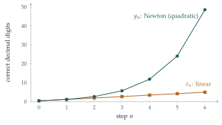

The sequence \(x_n\) for \(n = 0, 1, 2, \ldots\) is defined by \(x_0 = 1\) and by \[x_{n+1} = \frac{x_n + 2}{x_n + 1}\] for \(n \geq 0\).
Explain briefly why \(x_n \geq 1\) for all \(n\).
Show that \(x_{n+1}^2 - 2\) and \(x_n^2 - 2\) have opposite sign, and that \[\bigl|x_{n+1}^2 - 2\bigr| \leq \tfrac14 \bigl|x_n^2 - 2\bigr|.\]
Show that \[2 - 10^{-6} \leq x_{10}^2 \leq 2.\]
The sequence \(y_n\) for \(n = 0, 1, 2, \ldots\) is defined by \(y_0 = 1\) and by \[y_{n+1} = \frac{y_n^2 + 2}{2y_n}\] for \(n \geq 0\).
Show that, for \(n \geq 0\), \[y_{n+1} - \sqrt2 = \frac{\bigl(y_n - \sqrt2\bigr)^2}{2y_n}\] and deduce that \(y_n \geq 1\) for \(n \geq 0\).
Show that \[y_n - \sqrt2 \leq 2\left( \frac{\sqrt2 - 1}{2} \right)^{2^n}\] for \(n \geq 1\).
Using the fact that \(\sqrt2 - 1 < \frac12\), or otherwise, show that \[\sqrt2 \leq y_{10} \leq \sqrt2 + 10^{-600}.\]
The hook
Two simple recipes for approximating \(\sqrt2\), both starting from \(1\), both using nothing but addition, multiplication and division. After ten steps, the first is correct to about \(8\) decimal places. The second is correct to more than \(700\).
The difference is not that the second recipe is cleverer about \(\sqrt2\). It is a difference in the shape of the error: in the first, each step multiplies the error by a fixed fraction; in the second, each step squares it. The question makes this precise, and in doing so introduces one of the central ideas of numerical analysis, the subject that underlies every calculator, every weather forecast and every engineering simulation.
Before you start
Compute a few terms of each sequence as fractions. \[x_n: \quad 1,\; \frac32,\; \frac75,\; \frac{17}{12},\; \frac{41}{29},\; \frac{99}{70},\; \ldots \qquad y_n: \quad 1,\; \frac32,\; \frac{17}{12},\; \frac{577}{408},\; \frac{665857}{470832},\; \ldots\]
Do you notice anything about the two lists? (Look at which fractions appear in both.)
Every \(y_n\) appears in the \(x\) list, but further and further along: \(y_2 = x_3\), \(y_3 = x_7\), and in general \(y_n = x_{2^n - 1}\). The second recipe is skipping ahead exponentially fast through the same sequence of approximations. Keep this in mind; we will explain it at the end.
Working it through
Stage 1 The first recipe stays at least 1
We can write \(x_{n+1} = 1 + \dfrac{1}{x_n + 1}\). If \(x_n \geq 1\) then \(x_n + 1 > 0\), so \(x_{n+1} > 1\). Since \(x_0 = 1\), induction gives \(x_n \geq 1\) for all \(n\).■
Stage 2 The error in the first recipe
The question measures the error by \(x_n^2 - 2\) rather than \(x_n - \sqrt2\). Write \(x_{n+1}^2 - 2\) as a single fraction in terms of \(x_n\). What do you notice about the numerator?
\[x_{n+1}^2 - 2 = \frac{(x_n + 2)^2 - 2(x_n + 1)^2}{(x_n + 1)^2} = \frac{x_n^2 + 4x_n + 4 - 2x_n^2 - 4x_n - 2}{(x_n + 1)^2} = \frac{2 - x_n^2}{(x_n + 1)^2}.\] The numerator is exactly \(-(x_n^2 - 2)\). So \(x_{n+1}^2 - 2\) and \(x_n^2 - 2\) have opposite signs (the approximations alternate either side of \(\sqrt2\)), and since \(x_n \geq 1\) makes \((x_n + 1)^2 \geq 4\), \[\bigl|x_{n+1}^2 - 2\bigr| = \frac{|x_n^2 - 2|}{(x_n + 1)^2} \leq \frac14\bigl|x_n^2 - 2\bigr|. \qed\]
Stage 3 Ten steps
Applying this ten times, \(|x_{10}^2 - 2| \leq 4^{-10}|x_0^2 - 2| = 4^{-10} = \frac{1}{1048576} < 10^{-6}\). For the sign: \(x_0^2 - 2 = -1 < 0\), and the sign alternates, so \(x_n^2 - 2 < 0\) for every even \(n\). So \(x_{10}^2 < 2\), and together these give \(2 - 10^{-6} \leq x_{10}^2 \leq 2\).■
The error in \(x_n^2\) is multiplied by at most \(\frac14\) at each step. That is called linear convergence: a fixed number of extra correct digits per step (here at least \(\log_{10} 4 \approx 0.6\); in fact closer to \(0.77\)).
Stage 4 The error in the second recipe
Write \(y_{n+1} - \sqrt2\) as a single fraction. The numerator should remind you of a perfect square.
\[y_{n+1} - \sqrt2 = \frac{y_n^2 + 2 - 2\sqrt2\, y_n}{2y_n} = \frac{\bigl(y_n - \sqrt2\bigr)^2}{2y_n}. \qed\] If \(y_n > 0\), the right-hand side is non-negative, so \(y_{n+1} \geq \sqrt2 > 1\). Since \(y_0 = 1\), induction gives \(y_n \geq 1\) for all \(n\).■ (In fact \(y_n \geq \sqrt2\) for all \(n \geq 1\): after the first step, the second recipe always approaches \(\sqrt2\) from above.)
Stage 5 Squaring the error
Write \(e_n = y_n - \sqrt2\), so \(e_n \geq 0\) for \(n \geq 1\), and \(e_{n+1} = \dfrac{e_n^2}{2y_n} \leq \dfrac{e_n^2}{2}\) because \(y_n \geq 1\).
Prove by induction that \(e_n \leq 2r^{2^n}\) for \(n \geq 1\), where \(r = \frac{\sqrt2 - 1}{2}\). Check the base case carefully.
Base case: \(e_1 = \dfrac{(1 - \sqrt2)^2}{2 \cdot 1} = \dfrac{(\sqrt2 - 1)^2}{2}\), while \(2r^2 = 2 \cdot \dfrac{(\sqrt2 - 1)^2}{4} = \dfrac{(\sqrt2 - 1)^2}{2}\). They are equal, so the base case holds (exactly).
Inductive step: if \(e_n \leq 2r^{2^n}\) then \[e_{n+1} \leq \frac{e_n^2}{2} \leq \frac{4r^{2^{n+1}}}{2} = 2r^{2^{n+1}}. \qed\]
Stage 6 Six hundred digits
Since \(\sqrt2 - 1 < \frac12\), we have \(r < \frac14\), so \[0 \leq y_{10} - \sqrt2 \leq 2 \left(\frac14\right)^{2^{10}} = 2 \cdot 2^{-2048} = 2^{-2047}.\] Now \(2^{10} = 1024 > 10^3\), so \(2^{-2047} < 2^{-2040} = (2^{10})^{-204} < 10^{-612}\), which is certainly less than \(10^{-600}\).■
Looking back
Find the error recurrence. Both parts worked by writing the new error as an exact function of the old error. Everything else followed.
Linear versus quadratic. “New error \(\leq\) constant \(\times\) old error” gives a fixed number of extra digits per step. “New error \(\leq\) constant \(\times\) (old error)\(^2\)” doubles the number of correct digits per step (Figure 2.7.1).
Squared quantities control signs. In part (ii) the error after one step is a square divided by something positive, so it can never be negative: the iteration approaches from above.
What’s really going on
The second recipe is Newton’s method applied to \(f(y) = y^2 - 2\). Newton’s method finds a root of \(f\) by repeatedly replacing a guess \(y\) by the point where the tangent at \(y\) crosses the axis: \[y_{\text{new}} = y - \frac{f(y)}{f'(y)} = y - \frac{y^2 - 2}{2y} = \frac{y^2 + 2}{2y}.\] Near a simple root \(\alpha\), a Taylor expansion shows that the new error is approximately \(\frac{f''(\alpha)}{2f'(\alpha)} \times (\text{old error})^2\), which is why Newton’s method converges quadratically. This particular case, “average \(y\) and \(2/y\)”, was known to the Babylonians; a clay tablet from around 1700 BC, now called YBC 7289, gives \(\sqrt2\) in base \(60\) with an error of less than one part in a million.

Fixed points and their speed
Both recipes have the form \(u_{n+1} = g(u_n)\) with \(g(\sqrt2) = \sqrt2\), so \(\sqrt2\) is a fixed point, as in the cobweb diagram of Section 2.2. Near a fixed point \(\alpha\), the error is multiplied by about \(g'(\alpha)\) at each step. For the first recipe, \(g(x) = \frac{x+2}{x+1}\) and \(g'(\sqrt2) = -\frac{1}{(\sqrt2+1)^2} = -(3 - 2\sqrt2) \approx -0.17\): the minus sign explains the alternating signs and \(0.17\) explains the \(0.77\) digits per step (\(\log_{10}(1/0.17) \approx 0.77\)). For Newton’s method \(g'(\alpha) = 0\), so the linear term vanishes and the error is controlled by the next term, the square. Designing iterations with \(g'(\alpha) = 0\) is the art of fast numerical methods.
Why the same fractions appear
The fractions \(x_n = p_n/q_n\) satisfy \(p_{n+1} = p_n + 2q_n\) and \(q_{n+1} = p_n + q_n\), and \(p_n^2 - 2q_n^2 = \pm 1\), alternating. These are the solutions of Pell’s equation \(p^2 - 2q^2 = \pm1\), and they are the convergents of the continued fraction \(\sqrt2 = [1; 2, 2, 2, \ldots]\). They come from powers of \(1 + \sqrt2\): \(p_n + q_n\sqrt2 = (1 + \sqrt2)^{n+1}\). Newton’s step squares \(p + q\sqrt2\) (try it: \((p + q\sqrt2)^2 = p^2 + 2q^2 + 2pq\sqrt2\), and \(\frac{p^2 + 2q^2}{2pq}\) is exactly Newton’s formula applied to \(p/q\)). Squaring doubles the exponent, which is why \(y_n = x_{2^n - 1}\). The same pattern of “squaring” drives the iteration in Section 2.8.
The thinking skill
To understand how an approximation behaves, write down how the error at one step depends on the error at the step before.
This is the starting point of numerical analysis. The answer itself (\(\sqrt2\)) is the same for both recipes; what differs, and what matters in practice, is how the error evolves.
Try this next
Pell’s equation. Show that if \(y_n = p/q\) in lowest terms with \(p^2 - 2q^2 = 1\), then \(y_{n+1} = \dfrac{p^2 + 2q^2}{2pq}\) also satisfies this equation. Check that \(577^2 - 2 \times 408^2 = 1\).
Cube roots. Write down Newton’s method for \(f(y) = y^3 - 2\), and show that the new error is \(\dfrac{(y_n - \alpha)^2 (2y_n + \alpha)}{3y_n^2}\), where \(\alpha = \sqrt[3]2\). Deduce that if \(y_n > \alpha\) then the new error is at most \(\frac{1}{\alpha}\) times the square of the old error. (Hint: use \(\alpha^3 = 2\).)
Division without dividing. Show that Newton’s method for \(f(y) = \frac1y - a\) gives \(y_{n+1} = y_n(2 - a y_n)\), which needs no division. If \(e_n = 1 - a y_n\), show that \(e_{n+1} = e_n^2\). (Computer processors use iterations like this to divide.)
When Newton fails. Apply Newton’s method to \(f(y) = y^{1/3}\), whose only root is \(0\). Show that each step doubles the distance from the root, whatever you start with. Which hypothesis of the error formula fails?
Further reading
Endre Süli & David Mayers, An Introduction to Numerical Analysis (Cambridge University Press). The standard undergraduate text; Chapter 1 covers fixed-point iteration and Newton’s method.
Nick Higham (ed.), The Princeton Companion to Applied Mathematics (Princeton University Press). Short articles on Newton’s method and numerical analysis, written by experts for a wide audience.
David Fowler & Eleanor Robson, “Square root approximations in Old Babylonian mathematics: YBC 7289 in context”, Historia Mathematica 25 (1998).